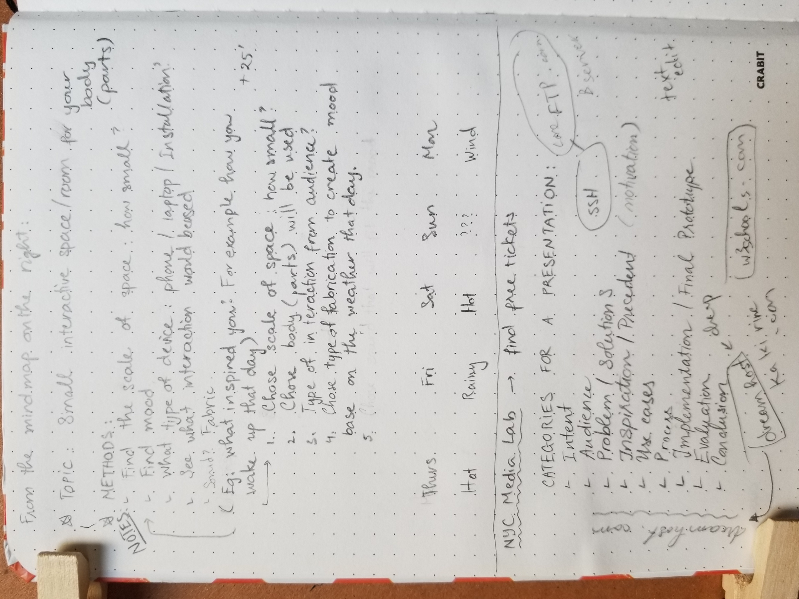

Description
5 in 5 is a project which a skecth will be made everyday. After brainstorming for this project, the final topic chosen to generate ideas is Small interactive space for your body(parts).
The constrains to make these sketches are the following:
- Define the size of the space (how small?)
- Pick the body(part) that would be used.
- Get the project inspired by the weather you experienced that day.
- Choose 1 type of interaction.
- Make each project sketch under 30’.